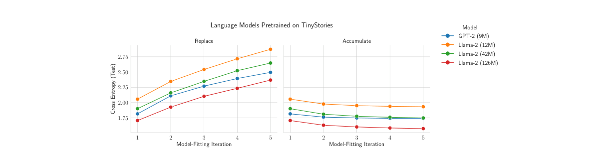

Generative models fed only their own output collapse within nine generations
A follow-up paper found that accumulating real data instead of replacing it avoided the collapse in every experiment the researchers ran.
Why this matters
More of the text, code, and images on the open web now comes from AI models rather than people, which means every future model has to learn from a web that already contains a great deal of AI output. Whether that quietly degrades the next generation of models, or whether real training pipelines sidestep the problem, is not settled. This lesson works through the strongest demonstration that the risk is real, the strongest rebuttal that shows a way around it, and the two places where the rebuttal itself runs into trouble. By the end you can tell apart what has actually been shown from what is still extrapolation about a web nobody has fully tested.
- 01
- Data poisoning: what happens when the corruption of training data is deliberate rather than accidental.
- 02
- Memorization: how specific training examples get pressed into a model's weights in the first place.
Nine generations from real text to a list of color morphs
In May 2023, Ilia Shumailov and coauthors described a failure mode they called model collapse. Train a generative model on text or images that an earlier model generated, feed that output back in as if it were real data, and repeat.1 Just over a year later the same team published a refined version of the study in Nature, with the same finding and the same demonstration.2 Trained on its own output, they write, a model's data "end up polluting the training set of the next generation," and being trained on polluted data, the model comes to "mis-perceive reality."2 The rare, unusual cases in the training distribution disappear first, what they call early collapse. Run the process long enough and the output narrows into something that barely resembles the original data at all, late collapse.2
They tested this on OPT-125m, a small open language model, fine-tuned on Wikipedia text. Fine-tuned once on the real data, the model scored 34 on perplexity, a standard measure of how surprised a model is by real text, where lower means the model predicts the text better.2 Feed that model's own output back in as training data, fine-tune a new model on it, and repeat for nine generations with none of the original text kept. Perplexity climbs by 20 to 28 points, roughly 60 to 80 percent worse than where it started.2 The words drift along with the score: the boxed example in the 2023 precursor shows a passage sliding, generation by generation, into a list of jackrabbit color varieties by generation nine.1
The same paper ran a third condition worth flagging early: instead of discarding all the original data, they kept a fixed 10 percent of it at every generation. Perplexity still rose, just more slowly.2
Keeping the old data around stops the collapse across three tasks
Gerstgrasser and coauthors tested a different rule.3 Instead of replacing the training set at every generation and discarding everything older, they accumulated it. Keep all the original real data, keep every earlier generation's synthetic output, and add each new generation's output on top: the pool only grows.3 They ran replace against accumulate on causal language models (GPT-2 and three sizes of Llama-2) pretrained on short stories, on a diffusion model generating molecular structures, and on variational autoencoders trained on faces. Replacing degraded all three; accumulating held test error roughly flat, or nearly flat for the diffusion model, across five to nine rounds of retraining.3

They also proved why, in a simplified case they could work out exactly: a sequence of linear models, each fit on the data available at that step. Replacing at every iteration makes test error grow in direct proportion to the number of iterations. Accumulating keeps it bounded, no matter how many iterations run. Each new generation's added noise gets diluted by a weight that shrinks in proportion to one over the iteration number squared, as the pool of real and synthetic data keeps growing.3 Gerstgrasser and coauthors put the upshot plainly: "these results strongly suggest that the 'curse of recursion' may not be as dire as had been portrayed — provided we accumulate synthetic data alongside real data, rather than replacing real data by synthetic data only."3
A fixed slice of the old data slows the collapse without stopping it
It is tempting to read Shumailov's 10 percent condition as a small version of Gerstgrasser's accumulation, proof the same fix showed up twice. It is a different operation. Ten percent retention keeps a fixed, constant slice of the original data at every generation, the same size each time.2 Accumulation keeps the entire growing history: all the real data plus every earlier generation's synthetic output. The fraction that is real data shrinks over time even as the absolute amount of real data never drops.3 Partial, fixed retention is the condition that only slowed Shumailov's collapse. Full, growing accumulation is the condition Gerstgrasser's team showed avoiding it. Reading the first as a miniature of the second overstates what either paper found.
One architecture and one theorem complicate the fix
Gerstgrasser's own paper names an exception to its result. Citing earlier work by Martínez and coauthors, they note that a different architecture, tested on a much smaller dataset, showed fast performance loss "even with accumulating data."3 They call understanding why "an interesting direction... for future research," not a solved problem.3
A later, separate theoretical paper complicates the picture further. Five months after Gerstgrasser's paper, Dohmatob and coauthors proved a related result in a comparable linear-regression setting. Whenever the synthetic share of the training mix stays a fixed fraction instead of shrinking toward zero as the dataset grows, collapse persists, "even the smallest fraction of synthetic data (e.g., as little as 1% of the total training dataset)."4 On its face that sounds like it targets accumulation directly. It does not straightforwardly refute it, because the two papers assume different things about how the synthetic share behaves. Gerstgrasser's own theorem has that share shrinking on its own, proportional to one over the iteration number squared, under their specific accumulation scheme, which is close to the condition Dohmatob's proof exempts.34 The two papers do not cite or engage each other on this point. Whether real accumulation schemes behave more like Gerstgrasser's shrinking share or Dohmatob's fixed one is an open, empirical question, not one either paper answers for the other.
- Accumulation held test error flat or nearly flat across language models, a diffusion model, and variational autoencoders, matching a proven bound in the tractable linear case.3
- A different architecture degraded quickly even while accumulating, in work Gerstgrasser's own paper cites and leaves unexplained.3
- A later theorem shows collapse persisting under a fixed synthetic share, an assumption the accumulation paper's own proof does not make, and the two results have not been reconciled.4
The strongest push for provenance is still the original paper's
Who is pressing the collapse worry today, and asking for what? The clearest primary answer is still the one in the original 2024 paper's own discussion. Preserve access to real, human-generated data, and coordinate across the field on tracking where content on the web actually came from.2 Yarin Gal, one of the paper's coauthors, put the stakes more bluntly at publication: "Model collapse is the AI equivalent of a feedback loop gone wrong. The more models feed on their own output, the further they drift from reality."5 Independent reporting on the same study carried the same framing, that companies retaining access to human-generated content may hold a structural advantage.6 Nothing more recent and equally authoritative restates or updates that position: more than two years on, the loudest primary voice on what to do about model collapse is still the team that demonstrated it.
The tension the collapse worry sits inside is that synthetic data has also made models better, when someone curates it deliberately. This paper's lesson on phi-1 covers the case in full: a small code model trained mostly on filtered web text plus a meaningful share of textbooks and exercises an earlier model wrote. It matched or beat StarCoder-Prompted, a code model built with about twelve times its parameters and more than a hundred times its training tokens.7 Gunasekar and coauthors never mention model collapse; their subject is data quality, not the replace-versus-accumulate question Shumailov and Gerstgrasser were testing.7 It is not a counter-example to either paper. It is evidence that synthetic data chosen deliberately, for a narrow purpose, behaves differently than synthetic data an internet-scale model absorbs indiscriminately. That gap, between curated use and indiscriminate use, is close to the gap between what has been demonstrated and what is still extrapolation about the open web.
Not every researcher reads the collapse literature as settled ground. Schaeffer and coauthors argue the field uses at least eight distinct, sometimes conflicting, definitions of model collapse, which makes it hard to say what any single study actually proved. They also argue that several of the most-cited collapse scenarios rest on assumptions that poorly match how models are actually trained.8
Model-collapse research is definitionally fragmented, and several of its most prominent scenarios rest on assumptions that do not match real deployment, which has pulled attention away from more immediately plausible harms of current AI development.
Their March 2025 paper counts at least eight distinct definitions of "model collapse" in circulation and argues that several prominent collapse scenarios are readily avoidable in practice.8
Even that reading does not dispute the core demonstration: replacing real data with a prior generation's synthetic output collapses models in every setting both papers tested. The disagreement is entirely about how far that finding travels beyond those settings.
The takeaway
Training a model only on a prior model's output collapses it within a handful of generations, and the tails of the training distribution go first. That part is settled, shown the same way in two papers just over a year apart. Whether that finding says much about the training pipelines companies actually run is not settled. Accumulating real data alongside the synthetic, rather than replacing it, avoided collapse in everything Gerstgrasser's team tested. It did not avoid collapse in a different architecture their own paper cites, and a later theorem shows collapse can persist under an assumption their proof does not make. The next time a number about model collapse crosses your feed, ask which of three regimes it is actually describing: replacement, a fixed partial retention, or full accumulation. Only one of them has been shown, so far, to avoid the problem.
- 01
- Gerstgrasser et al., the accumulation paper: the full empirical and theoretical case, including the exception it names.
- 02
- Dohmatob et al., "Strong Model Collapse": the later theorem that complicates it.
Sources
- arXiv · Shumailov et al., "The Curse of Recursion: Training on Generated Data Makes Models Forget" (2023)
- Nature · Shumailov et al., "AI models collapse when trained on recursively generated data" (2024)
- arXiv · Gerstgrasser et al., "Is Model Collapse Inevitable? Breaking the Curse of Recursion by Accumulating Real and Synthetic Data" (2024)
- arXiv · Dohmatob et al., "Strong Model Collapse" (2024)
- University of Oxford Department of Computer Science · News release on the Nature model-collapse study
- TechXplore · News coverage of the Nature model-collapse study
- arXiv · Gunasekar et al., "Textbooks Are All You Need" (2023)
- arXiv · Schaeffer, Kazdan, Arulandu and Koyejo, position paper on model-collapse definitions and evidence (2025)